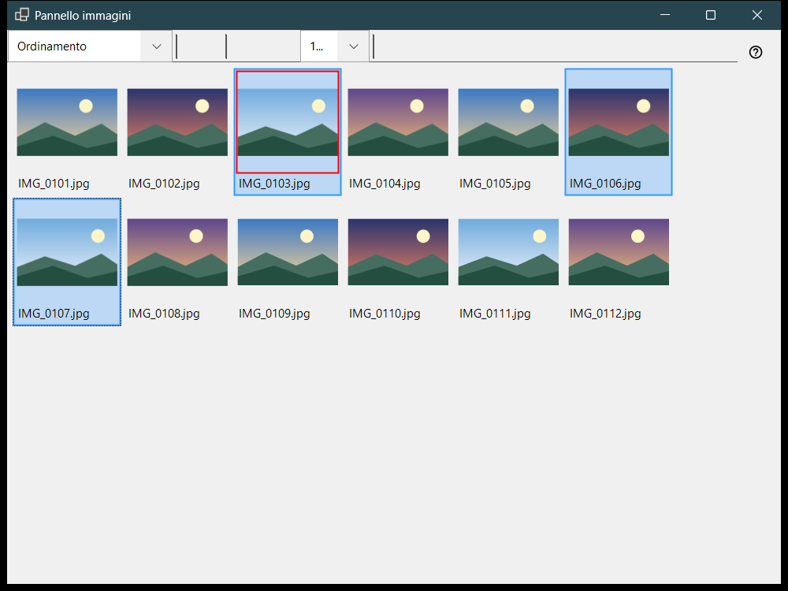
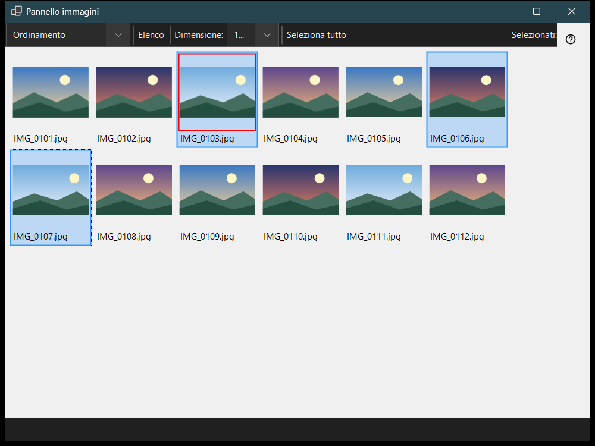

Pannello immagini
Scopo
Il pannello immagini si apre con F3 dal visualizzatore e lavora in due modalità scelte nella casella «Modalità pannello»: Ordinamento, una griglia di miniature della cartella corrente, e Gestione file, un browser con posizioni, cartelle e comandi per i file. Guardare i file, selezionarli e chiudere il pannello non cambiano ciò che mostra la finestra principale.


In questo ordine
- Premi F3 nel visualizzatore.
- Scegli la modalità in «Modalità pannello».
- Seleziona i file: clic, Shift+clic per un intervallo, Ctrl+clic per attivarne o disattivarne uno, oppure trascina un rettangolo.
- Nella modalità Ordinamento premi 0-9 per spostare la selezione in una cartella di destinazione, oppure Shift con una cifra della riga superiore per copiarla; Ctrl+Z annulla l'ultima operazione.
- Fai doppio clic su un file o premi Enter per aprirlo nella finestra principale.
- Premi Esc per annullare un'operazione in corso, poi di nuovo Esc per chiudere il pannello.
Gli elementi
Modalità pannello
«Modalità pannello» passa tra Ordinamento e Gestione file. La modalità Ordinamento mostra le miniature della cartella corrente per spostare e copiare in fretta; la gestione file sfoglia qualsiasi cartella e offre comandi per i file.
Dimensione, disposizione e selezione
Il cursore (Dimensione:) imposta la dimensione delle miniature, «Riquadri» ed «Elenco» cambiano la disposizione (Ctrl+L), e il contatore della selezione mostra quanti file sono selezionati sul totale.
Selezione e ordinamento
Il clic seleziona, Shift+clic seleziona un intervallo, Ctrl+clic attiva o disattiva un singolo file e il trascinamento disegna un rettangolo di selezione. Ctrl+A seleziona tutto, Ctrl+Shift+A annulla la selezione, Ctrl+I la inverte, la barra spaziatrice contrassegna un file, e le frecce, Home, End, PgUp e PgDn permettono di muoversi. Le cifre 0-9 spostano la selezione nella cartella di destinazione di quel tasto, Shift con una cifra della riga superiore la copia, Del la elimina e Ctrl+Z annulla l'ultima operazione.
Filtro e file nascosti
Il filtro contenuti sceglie File multimediali, File multimediali e documenti o Tutti i file, e «Nascosti» mostra o nasconde i file nascosti. «Impostazioni..» apre la finestra Impostazioni sulla pagina Gestione file, dove si impostano la modalità di visualizzazione, il filtro, le posizioni e l'ordinamento memorizzato.
Comandi per i file
Ctrl+C, Ctrl+X e Ctrl+V copiano, tagliano e incollano, F2 rinomina, Ctrl+Shift+N crea una cartella, Del e Shift+Del eliminano gli elementi selezionati e Alt+Enter mostra le proprietà. La copia o lo spostamento tra risorse passa da questo PC.
Crea ZIP
«Crea ZIP» comprime tutte le cartelle e i file selezionati in un unico archivio. L'eliminazione degli originali è disattivata per impostazione predefinita ed è consentita solo dopo che l'archivio è stato verificato e pubblicato.
Estrai qui
«Estrai qui» agisce su un solo archivio selezionato: le cartelle e i file normali vengono conservati, l'archivio originale resta al suo posto e i programmi estratti non vengono mai eseguiti. Esc annulla l'operazione.